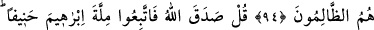

TEMİZ HANİF DÎNİ
93. Tevrat’ın indirilmesinden önce, İsrâil’in (Yâkub’-un) kendisine haram
kıldıkları dışında, yiyeceğin her türlüsü İsrâiloğulları’na helal idi. De ki: Eğer doğru
sözlü iseniz, o zaman Tevrât’ı getirip onu okuyun.
94. Artık bundan sonra her kim Allah’a karşı yalan uydurursa, işte bunlar,
zâlimlerin ta kendileridir.
95. De ki: Allah doğruyu söylemiştir. Öyle ise, hakka yönelmiş olarak İbrâhîm’in
dînine uyunuz. O, müşriklerden değildi.
“Yahûdîlerin haksızlıklarından ötürü, kendilerine helal kılınan temiz şeyleri
onlara haram kıldık.” (en-Nisâ, 4/160) âyetiyle “Yahûdîlere bütün tırnaklı
hayvanları haram kıldık... Aşırı gitmelerinden ötürü onları bu şekilde
cezalandırdık.” (el-En’âm, 6/146) âyet-i kerîmesi nâzil olunca, yahûdîler bundan
hoşlanmadılar. Bu âyetler onları çok kızdırmıştı. Kendilerinin zulmetmediklerini
söyleyerek, Kur’ân’ın haber verdiği şeyleri inkâr ettiler ve şöyle dediler:
“Bu yiyecekler kendilerine ilk yasaklanan kişiler biz değiliz. Bu yasak, kadîm bir
yasaktır. Bütün bu yiyecekler, Nûh’a, İbrâhîm’e ve ondan sonrakilere de yasaktı. Bu
yasaklar, nihâyet bize kadar gelmiştir.” Bunu söylerken maksatları; Allah’ın onlar
hakkındaki şahitliğinin yalan olduğunu ifade etmekti. Azgınlık, zulüm, Allah yolundan
çevirme ve fâiz yeme gibi davranışları ile ilgili olan ve irtikâb ettikleri her büyük günah
karşılığında ceza olarak helal bir yiyecek türünün haram edildiğine dâir ilâhî şehadeti
inkar etmekti.
Bu âyetteki “bütün yiyecekler”den maksadın yenilebilecek her şey olduğu, bütün
yemek çeşitleri olduğu da ifade edilmiştir.
Mutlak olarak taam = yiyecek denildiği zaman, bundan kastedilen buğdaydır. Örf ise,
su dâhil boğazdan geçen her şeyin yiyecek olduğunu göstermektedir.
“İsrâiloğulları’na helâldi.” İfâdesinden maksat, bunların yenmesinin helal
olduğudur. Çünkü haramlık ve helâllik gibi kavramlar, mükellefin fiilleridir. Yoksa,
bizzat eşyânın kendisi değildir. Meselâ; şarap içmek bizzat her hâl-ü kârda haramdır,